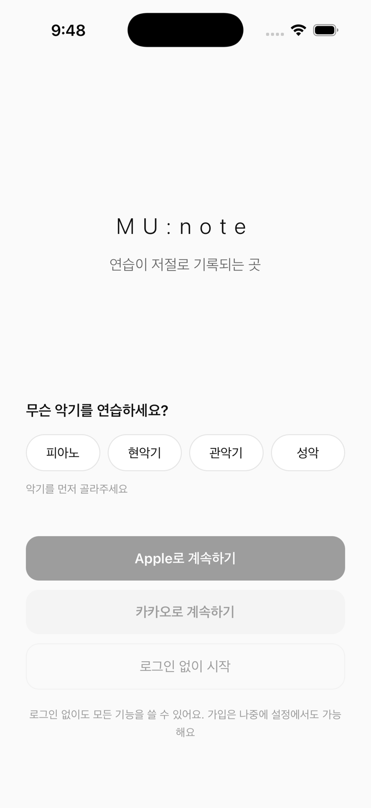
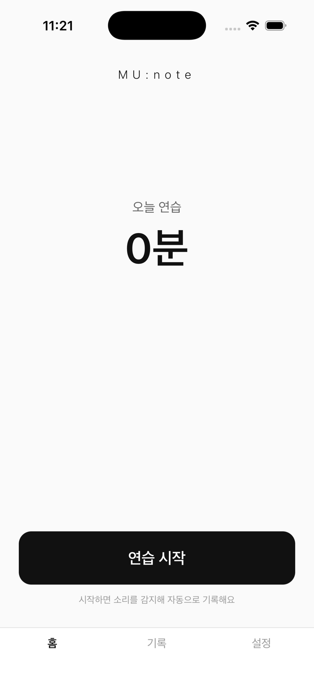

연습이 저절로 기록되는 곳
악기 소리를 인식해 연습 시간을 자동으로 기록하는 iOS 앱
수기 기록은 귀찮아서 끊기고, 타이머 앱은 시작·정지를 매번 눌러야 해서 꾸준히 쓰이지 않습니다. 기록되지 않은 연습은 시간이 지나면 기억에서도 사라집니다.
폰을 옆에 두고 시작 버튼을 누른 뒤, 연주만 하면 됩니다.
기기 안의 AI가 악기 소리일 때만 타이머를 진행합니다. 말소리·생활소음은 연습으로 치지 않습니다.
세션이 끝나면 짧은 회고와 함께 달력에 쌓입니다. 꾸준함이 한눈에 보입니다.
온디바이스 AI 분류로 피아노·현악기·관악기·성악을 실측 검증했습니다. 무음 10초까지는 악보를 읽는 시간으로 보호하고, 그 이상 쉬면 정직하게 제외합니다.
연습 중 앱을 벗어난 시간은 "이탈"로 담백하게 기록됩니다. 단, 이탈 중에도 악기 소리가 들리면 연습으로 인정 — 악보 앱을 보며 연주하는 시간을 지킵니다.
세션을 마치면 기록을 근거로 한 짧은 관찰과 격려가 도착합니다. 과장하지 않고, 데이터에 없는 말은 하지 않습니다.
연습량에 따라 진해지는 달력, 하루 20분 이상만 인정하는 연속 기록. 부풀리지 않는 숫자라서 나중에 봐도 믿을 수 있습니다.


iOS 앱으로 개발 중이며 TestFlight 클로즈 베타를 준비하고 있습니다.
체험 링크와 시연 영상은 곧 이 자리에 추가됩니다.